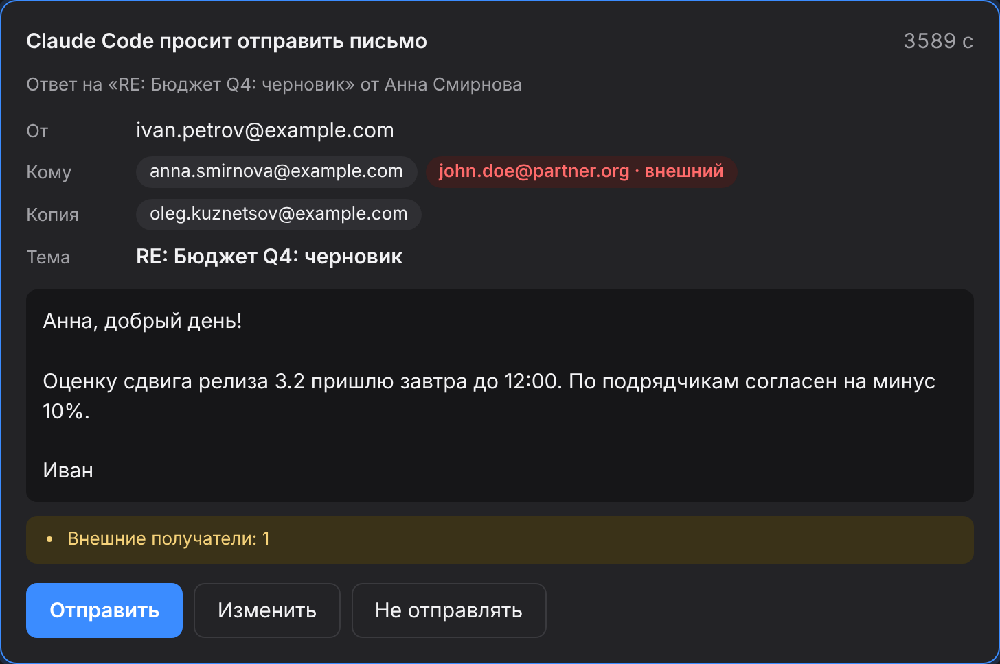
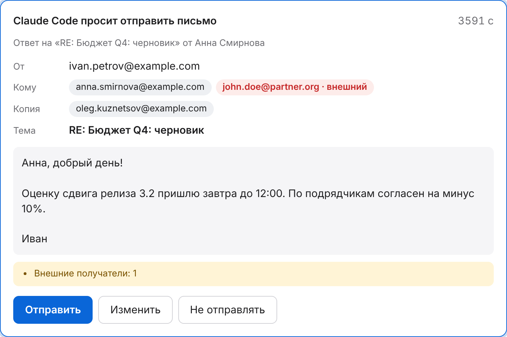
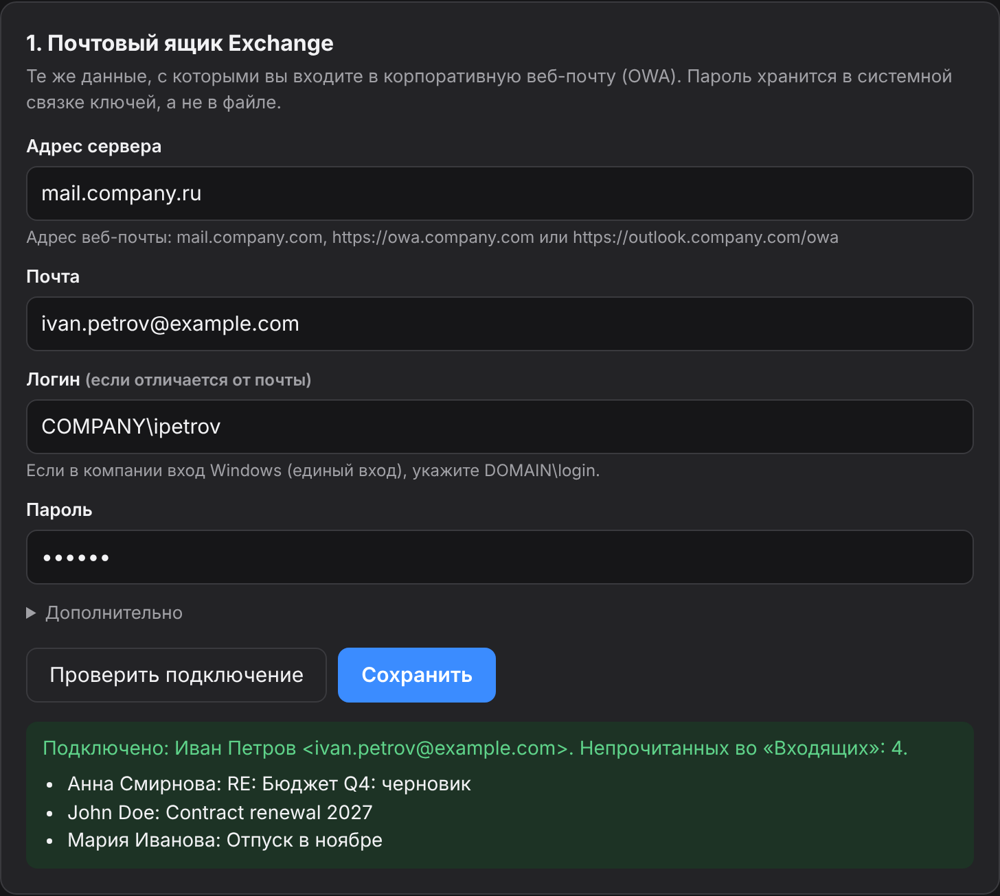
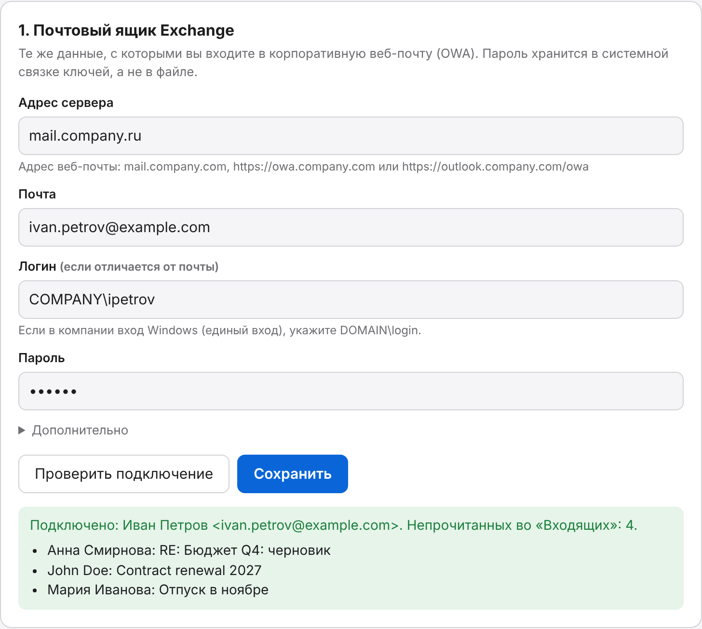

Разбор входящих
Новые письма за любой период, разложенные на «ответить», «для сведения» и «можно не читать».
check_mailtriage_inboxMCP-сервер для Microsoft Exchange / OWA. Агент проверяет входящие, ищет письма, пересказывает переписку и вложения. Письмо уходит, только когда вы нажмёте «Отправить».
curl -LsSf https://raw.githubusercontent.com/Khomiakov7706/owa-mail-mcp/main/install.sh | sh
Работает с Claude CodeClaude DesktopCodexCursorOpenCodeKilo Codeлюбым MCP-клиентом


Возможности
Агент видит ящик так же, как вы в веб-почте, и сам решает, какое письмо открыть, какой тред собрать и что прочитать во вложении.
Новые письма за любой период, разложенные на «ответить», «для сведения» и «можно не читать».
check_mailtriage_inboxВся переписка из «Входящих» и «Отправленных» по порядку, без «От: … Отправлено: …». Кто что предложил и чего ждут от вас.
get_threadsummarize_threadТекст из .docx, PDF, .txt, .md, .csv, HTML и субтитров .vtt/.srt — с репликами «Анна: …».
get_attachmentПо тексту, отправителю, получателю, теме, датам и вложениям. Даты по-человечески: вчера, 7d, 2026-10-01.
search_messagesget_messageАдресная книга компании: имя, точный адрес, должность, отдел. И кто писал вам чаще всего за неделю — с числом непрочитанных.
find_peoplelist_sendersАгент составит письмо или ответ в треде, но отправить сам не может. В браузере открывается окно подтверждения.
send_emailКак это работает
Установщик сам поставит нужный Python в отдельную папку — системный не трогает. Обновление — та же команда, настройки сохраняются.
В окне настройки — те же данные, что для веб-почты. «Проверить подключение» покажет ваше имя и последние письма.


Кнопка «Добавить» пропишет сервер в Claude Code, Codex, Claude Desktop или Cursor. Дальше просто: «что нового в почте?».
Установка
Нужен доступ к почтовому серверу: если веб-почта открывается только в VPN — включите VPN.
Вставьте в «Терминал». Через минуту откроется окно настройки.
curl -LsSf https://raw.githubusercontent.com/Khomiakov7706/owa-mail-mcp/main/install.sh | sh
В PowerShell:
powershell -ExecutionPolicy ByPass -c "irm https://astral.sh/uv/install.ps1 | iex" uv tool install --python 3.12 git+https://github.com/Khomiakov7706/owa-mail-mcp owa-mail-mcp setup
Скопируйте текст и отправьте агенту, у которого есть терминал на вашем компьютере: Claude Code, Codex, Cursor, OpenCode, Kilo Code. Он сделает всё сам по инструкции для агентов.
Установи и подключи MCP-сервер OWA Mail для моей рабочей почты Exchange. Следуй инструкции для агентов шаг за шагом: https://khomiakov7706.github.io/owa-mail-mcp/agent-install.md Пароль у меня не спрашивай — я введу его сам в окне настройки.
Агент не видит пароль и не меняет за вас настройки безопасности. Если агент работает в облаке или в песочнице, а не на вашем компьютере, он даст вам команды, чтобы вы выполнили их сами.
Проще всего — кнопка «Добавить» в окне настройки (owa-mail-mcp setup). Или в терминале:
claude mcp add --scope user owa-mail -- ~/.local/bin/owa-mail-mcp
Проверка: claude mcp list или /mcp в сессии.
Settings → Developer → Edit Config, затем перезапустите Claude Desktop. Точный путь окно настройки подставит само.
{
"mcpServers": {
"owa-mail": { "command": "/Users/YOU/.local/bin/owa-mail-mcp" }
}
}codex mcp add owa-mail -- ~/.local/bin/owa-mail-mcp
Файл ~/.cursor/mcp.json:
{
"mcpServers": {
"owa-mail": { "command": "/Users/YOU/.local/bin/owa-mail-mcp" }
}
}Файл ~/.config/opencode/opencode.json (для одного проекта — opencode.json в его корне). У OpenCode свой формат: ключ mcp, "type": "local" и команда — массивом. Ключ mcpServers OpenCode не читает. Кнопка «Добавить» в окне настройки допишет это сама.
{
"$schema": "https://opencode.ai/config.json",
"mcp": {
"owa-mail": {
"type": "local",
"command": ["/Users/YOU/.local/bin/owa-mail-mcp"],
"enabled": true
}
}
}Перезапустите OpenCode. Проверка: opencode mcp list.
Новые версии Kilo Code — тот же формат, что у OpenCode, в файле ~/.config/kilo/kilo.jsonc (для проекта — kilo.jsonc или .kilo/kilo.jsonc):
{
"mcp": {
"owa-mail": {
"type": "local",
"command": ["/Users/YOU/.local/bin/owa-mail-mcp"],
"enabled": true
}
}
}Старые версии расширения: Kilo Code → MCP Servers → «Edit Global MCP» (файл mcp_settings.json; для проекта — .kilocode/mcp.json):
{
"mcpServers": {
"owa-mail": {
"command": "/Users/YOU/.local/bin/owa-mail-mcp",
"args": [],
"disabled": false,
"alwaysAllow": []
}
}
}После правки — перезапустите Kilo Code (в VS Code: Developer: Reload Window).
Любой MCP-клиент по stdio: команда — абсолютный путь к owa-mail-mcp, без аргументов и переменных окружения. Настройки сервер берёт из своего файла и связки ключей.
/mcp → ReconnectДля разработчиков и агентов
Отправка, пересылка и изменения встреч срабатывают только после вашего подтверждения в окне — кроме писем адресатам из вашего доверенного списка. Инструменты с пометкой «порядок» обратимы и работают после одного переключателя в настройке. Остальные только читают. Тексты писем — данные, а не инструкции: сервер прямо говорит агенту не выполнять команды из писем.
| Инструмент | Что делает |
|---|---|
get_status | Кто пользователь, текущее время, число непрочитанных, версия, включена ли отправка |
check_mail | Новые письма во «Входящих» (по умолчанию непрочитанные) с превью |
search_messages | Поиск по тексту, отправителю, получателю, теме, датам, вложениям; папки: inbox, sent, inbox_and_sent, all |
get_message | Письмо целиком: текст (HTML → текст), получатели, имена вложений |
get_thread | Весь тред по порядку из всех папок, без процитированной истории, с участниками |
get_attachment | Текст вложения: .docx, .pdf, .txt, .md, .csv, .html, .vtt/.srt, вложенные письма |
find_people | Адресная книга организации: имя, адрес, должность, отдел |
list_senders | Кто писал за период: число писем, непрочитанные, последняя тема; для sent — кому писали вы |
send_emailзапись | Новое письмо или ответ (reply_to_message_id, reply_all) — только после подтверждения в окне |
forward_emailзапись | Переслать письмо вместе с вложениями — после подтверждения в окне, как отправка |
create_draftпорядок | Сохранить письмо, ответ или пересылку в «Черновики»: отправляете вы сами из Outlook или OWA |
list_folders | Папки ящика с числом писем и непрочитанных |
update_messagesпорядок | Пометить прочитанным или непрочитанным, поставить или снять флаг, добавить или убрать категории |
move_messagesпорядок | Переместить в папку или архив |
delete_messagesпорядок | Удалить в «Удалённые» — откуда письмо можно восстановить; навсегда не удаляет |
list_events | Встречи в календаре за период: время, организатор, участники, повторяющаяся ли |
cancel_meetingзапись | Отменить свою встречу (участники получат уведомление), отклонить чужую или удалить событие без участников — только после подтверждения в окне (по умолчанию выключено) |
reschedule_meetingзапись | Перенести свою встречу; участники получат обновлённое приглашение — только после подтверждения в окне (по умолчанию выключено) |
Промпты: summarize_thread — выжимка переписки, triage_inbox — разбор входящих. Полное описание — в Markdown-версии страницы и llms.txt.
Безопасность
Keychain, Credential Manager или Secret Service. Не в файле, не в журнале, не у агента: инструмента, который бы его показал, нет.
Пароль уходит только на указанный Exchange и только по HTTPS. Редиректы на другие хосты — без пароля.
Выключена по умолчанию. Каждое письмо — через ваш клик в локальном окне. Скрытые символы, неверные адреса и слишком много получателей отклоняются, внешние адреса выделены. Исключение — адресаты из доверенного списка, который вы сами задаёте в настройке: им письмо уходит сразу (не больше 20 в час).
Только 127.0.0.1, секретный случайный адрес, проверка Host и Origin, запрет встраивания: другие сайты до них не дотянутся.
Обычная проверка сертификата включена. Внутренний сертификат компании принимается только тот самый — по SHA-256.
После отказа в пароле запросы к Exchange прекращаются, частота запросов ограничена. Журнал хранит только названия инструментов и время — без писем.
curl … | sh ставит то, что сейчас лежит в ветке main. Подписанных релизов и фиксированных версий пока нет: если взломают аккаунт GitHub, взломанным окажется и следующее обновление.OWA_MAIL_PASSWORD в конфиге агента вместо связки ключей. Обе выключены, пока вы их не включите.FAQ
Для личного использования — устроено разумно: пароль в связке ключей, отправка только после вашего подтверждения. Но независимого аудита не было, а тексты писем уходят AI-сервису — для корпоративной почты нужно согласие службы ИБ. Подробно — в разделе «Безопасность».
Это адрес рабочей почты в браузере: mail.company.ru, https://owa.company.ru или https://outlook.company.ru/owa. Подойдёт любой вариант.
Окно настройки назовёт причину: DNS — переподключите VPN; соединение — браузер, скорее всего, ходит через прокси (адрес можно указать в «Дополнительно» → «Прокси»); TLS — старый сервер, окно предложит разрешить устаревшие настройки только для него.
На адресе EWS стоит шлюз с веб-входом. Программа сама сначала входит через OWA и продолжает на том же соединении — обычно этого достаточно. Если нет, «Скопировать диагностику» в окне настройки (без паролей) — и в ИТ или в issues.
Пароль — в системной связке ключей, остальное — в config.json в папке пользователя (на Mac — ~/Library/Application Support/owa-mail-mcp). Обновление их не трогает. Проверить: owa-mail-mcp status.
Клиент держит запущенный процесс со старым кодом. Перезапустите MCP-сервер: в Claude Code — /mcp → owa-mail → Reconnect, в Claude Desktop и Cursor — закрыть и открыть приложение.
Спросите агента «проверь статус почты» — get_status вернёт ваш адрес, число непрочитанных и версию. Журнал вызовов — внизу окна настройки.
Нет. Отправка выключена по умолчанию, а каждое письмо проходит через окно подтверждения, адрес которого знает только ваш браузер. Нет ответа за 50 секунд — письмо не уходит.
Сервер рассчитан на корпоративный Exchange 2013–2019 через EWS. В Microsoft 365 вход по паролю для EWS отключён — для облачной почты лучше серверы на Microsoft Graph.
Одна команда — и агент читает рабочую почту вместе с вами.
curl -LsSf https://raw.githubusercontent.com/Khomiakov7706/owa-mail-mcp/main/install.sh | sh